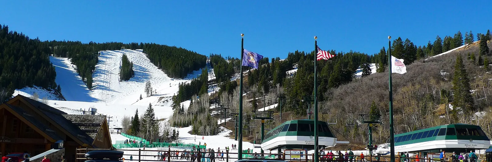

Deer Valley, Park City, Utah · Ski conditions
Deer Valley Conditions and Webcams Today
Deer Valley's webcams and kid facts: ski only (no snowboards), childcare from 2 months, lessons from age 3. Salt Lake City's airport is 38 miles away, Deer Valley says.
Researched with AI (Miles Rowan) · sources linked and dated · How we check
Deer Valley's own status
Not open yetOpens Sat, Dec 5 (countdown target) (Deer Valley's home page countdown, read Nov 18). Updates: Deer Valley hours of operation.
Our webcam read
No cam read from us yet. Cam reads show here only when a recent one has passed a separate automated accuracy check.

Plan the day with kids
- Season and hours: The home page countdown points to Sat, Dec 5, 9am Mountain time. The hours page lists no season dates and shows everything closed for the season.
- Ski only: Deer Valley is a ski-only resort: no snowboards. For snowboarding, Deer Valley points to Park City Mountain.
- Childcare: Children's Center at Snow Park Lodge, for non-skiing kids 2 months to 12 years, 8:30am to 4:30pm, lunch on full days. Reservations essential: 888-754-8477.
- Lessons: Group lessons by age: Fawn Special (3), Bambi Club (4), Reindeer Club (5-6), Adventure Club (7-12), Teen Escape (13-17). Reindeer Club leaves out the lift ticket and rentals; we didn't read the other programs' pages.
- Lesson morning: Reindeer Club: drop off 9-9:45am in the Children's Center Reindeer Room (free early drop-off from 8:30am); pick up 3:45pm at the bottom of Wide West. Allow 45-60 minutes for rentals.
- Lift tickets: Daily ticket prices sit in Deer Valley's online store, which our reader can't open, so we show none. Daily sales are capped; buy ahead. Ticket ages: Tot 4 and under, Child 5-12, Adult 13-64.
- Strollers: Strollers and backpack carriers are allowed on the chairlift at your own risk, Deer Valley says.
- Parking: Free at Snow Park Lodge and Deer Valley East Village; if full, Richardson Flat with the 8 Express bus from Dec 6. Busy days: Lot 2 for cars with 3 or more skiers.
Childcare and lesson prices on Deer Valley's pages, read Nov 18:
- Childcare, ages 12 months to 12 years, per child per day (our reading): $215 regular / $225 high / $230 holiday
- Childcare, infants 2-11 months, per child per day (our reading): $220 regular / $230 high / $235 holiday
- Reindeer Club group lesson, ages 5-6, full day with lunch, per child: $405 regular / $450 high / $470 holiday
- Lift ticket add-on with that lesson: $135
- Learning Area ticket, all ages, one day: $68 (plus sales tax; read Nov 14)
From Deer Valley's 26/27 rate tables, read Nov 18 (Learning Area: ticket page, Nov 14). The childcare table names no unit. Lesson page high dates: Dec 18-25, Jan 15-18, Feb 5-10; holiday: Dec 26-Jan 2, Feb 11-20, Mar 6-Apr 3. The childcare page lists no dates for its rates. Cancel before 5pm two days ahead for a full refund; the day before, lessons keep $150 per child per day and childcare $50; on the day, no refund.
Lift tickets and lessons: Deer Valley's pages we could read show childcare, lesson and Learning Area prices but no daily lift ticket price, so we can't sum a family-of-4 day; check live. See Deer Valley lift tickets.
From Deer Valley home page (opening-day countdown), Deer Valley FAQs, Deer Valley lift tickets (read Nov 14), Deer Valley kids group lessons, ages 5-6 (26/27 pricing), Deer Valley Children's Center (26/27 rates), Getting to Deer Valley and Deer Valley hours of operation, read Nov 18 unless dated.
Getting there from Salt Lake City
- Car: Salt Lake City's airport is 38 miles away, per Deer Valley (no drive time posted). Deer Valley points to UDOT traffic cameras for road conditions.
- Free buses: Park City's free transit serves all three Deer Valley day lodges. The 8 Express runs from Richardson Flat Park & Ride to Snow Park Lodge about every 20 minutes at peak, Dec 6 to late March or early April.
- Silver Lake Village has very limited paid parking; Empire Canyon Lodge has no public parking. Start at Snow Park Lodge.
If the snow is thin
- Lessons run regardless of the weather, and weather isn't a reason to cancel one. Cancel before 5pm two days ahead for a full refund; day-of cancellations and no-shows get nothing back.
- Pre-bought lift tickets can change or cancel up to 5pm two days before the first ski day; later there is a fee per skier, per product, and no refund after the first ski date.
- We found no tubing or sledding on the Deer Valley pages we read.
From Deer Valley kids group lessons, ages 5-6 (26/27 pricing) and Deer Valley lift tickets (read Nov 14) and Deer Valley FAQs, read Nov 18 unless dated.
Cam by cam
The 2 Deer Valley cam views our reader uses, in our own descriptive words (see Deer Valley's own cam page, as listed in our cam feed Nov 18): Lift top, Summit sign. Once our reads start, each cam's last read time shows here.
How we read the cams: a program looks at Deer Valley's public webcam pictures and notes only what a picture can show: fresh snow, snow cover, snowmaking, moving lifts, how busy the base looks, visibility and the snow stake. Each read shows its time; after 90 minutes it is marked older, after 6 hours it is hidden. We never say whether terrain is safe, icy, groomed or open; Deer Valley's own report decides that. We don't show the cam pictures or count people.
Sources: Deer Valley webcams · Deer Valley hours of operation · Deer Valley kids group lessons, ages 5-6 (26/27 pricing) · Deer Valley Children's Center (26/27 rates) · Getting to Deer Valley · Deer Valley home page (opening-day countdown) · Deer Valley FAQs · Deer Valley lift tickets (read Nov 14). Read Nov 18 unless dated. We haven't skied Deer Valley.